LETNÁ AKCIA | Inteligentný 4-izbový bungalov so suterénom | Liptovský Michal
Ružomberok
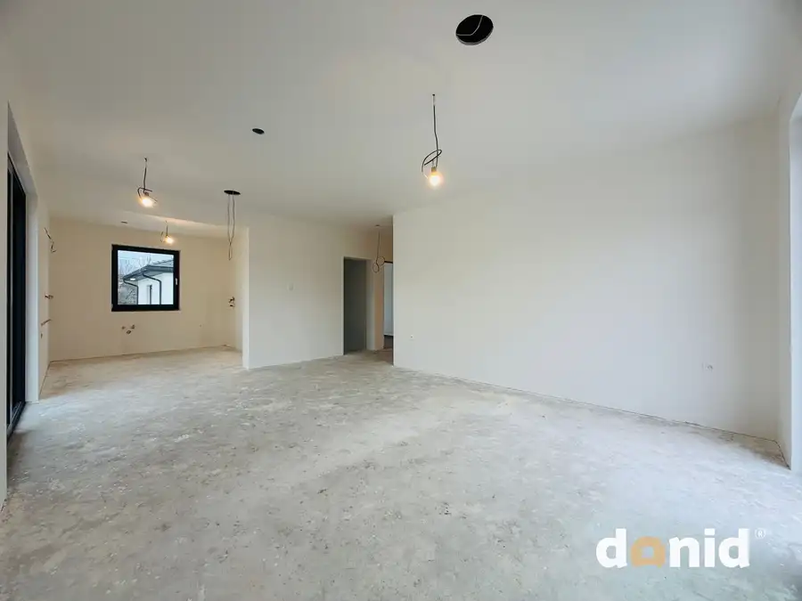
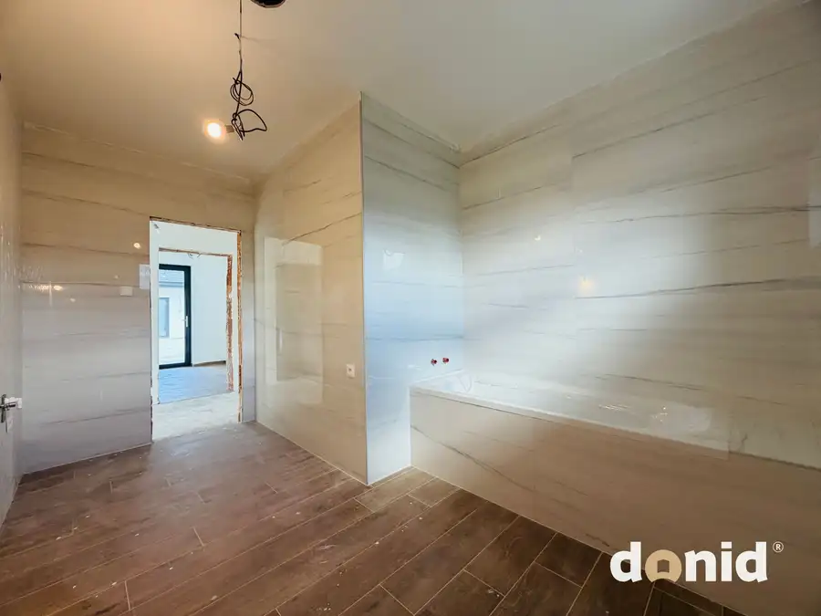
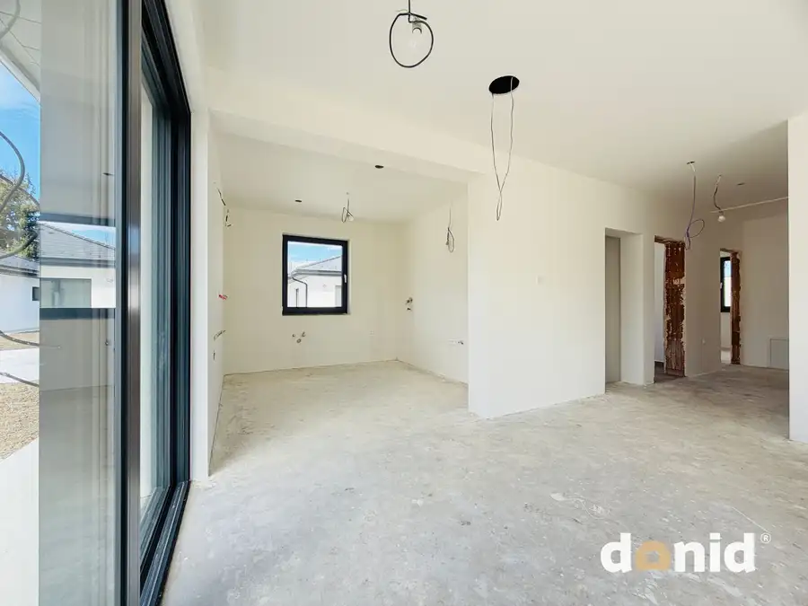
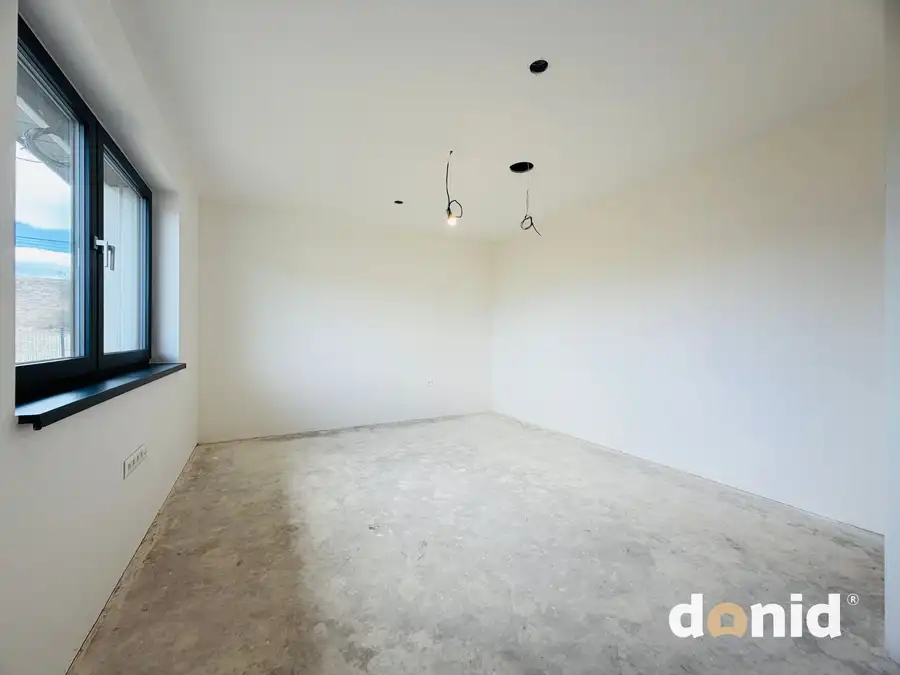
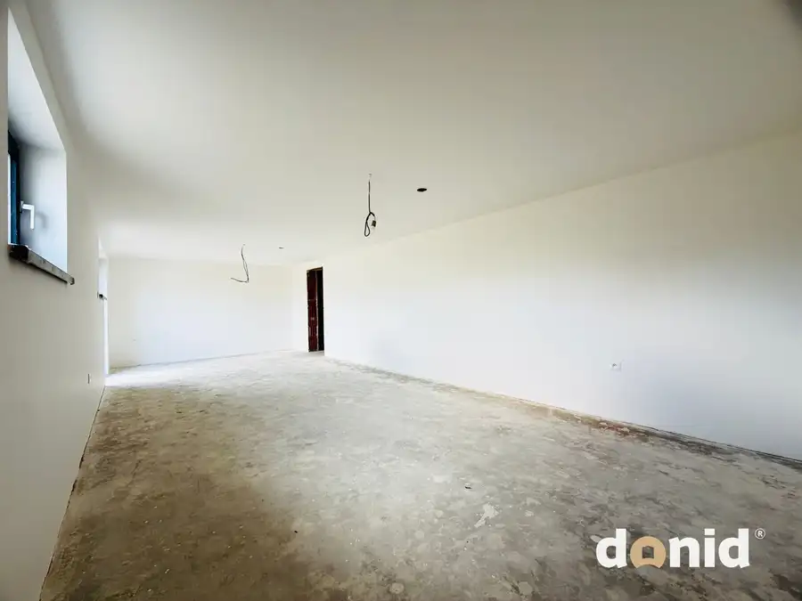
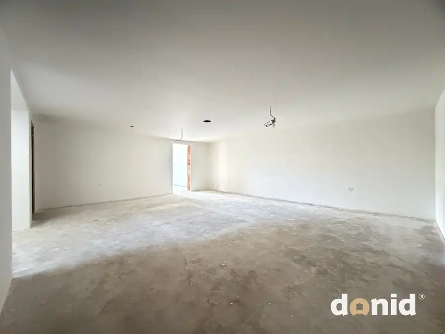
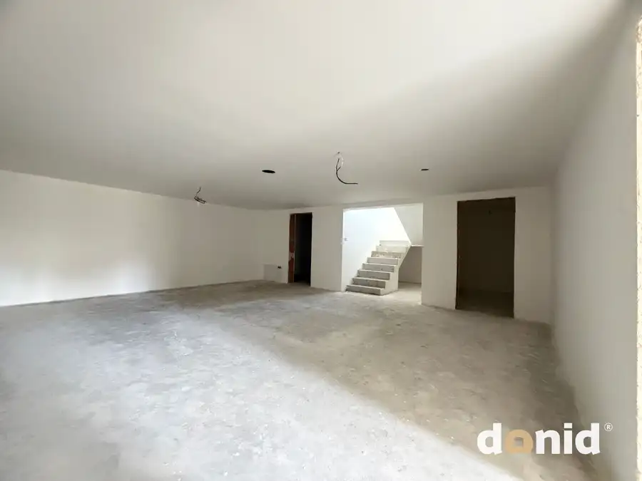
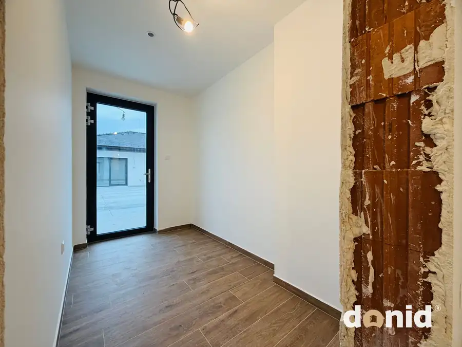
- Plocha190.5 m²
- StavNovostavba
- Energetická triedaA
O nehnuteľnosti
Ponúkame na predaj technologicky vyspelú novostavbu 4-izbového rodinného domu v obci Liptovský Michal. Tento dom vyniká nielen svojou inteligentnou elektroinštaláciou, ale aj veľkorysým suterénom, ktorý ponúka nekonečné možnosti využitia.TERAZ LETNÁ AKCIA: 354 000,-€ (pôvodná cena 375 000,-€)Základné parametre:Úžitková plocha prízemie: 94,5 m² + terasaSuterén (podpivničenie): 96 m² (ideálne pre wellness, fitness, party miestnosť)Pozemok: 504 m² (+ 1/4 podiel t.j. 53 m² na prístupovej ceste) Stav: Skolaudovaná novostavba (kúpeľňa hotová, potrebné položiť podlahy a zariadiť)Exteriér: Kompletne dokončený (okrem oplotenia)Dispozičné riešenie:Dom je logicky rozdelený na dennú a nočnú časť pre maximálne súkromie:Prízemie: Zádverie, chodba, samostatné WC, priestranná kúpeľňa (dokončená), spálňa, detská izba a otvorená obývacia izba prepojená s kuchyňou a výstupom na terasu.Suterén (96 m²): Unikátny priestor pod celou plochou domu, kde môžete mať svoje súkromné wellness, domáce kino alebo dielňu.Technológie & Smart Home (Loxone):Dom je pripravený na najmodernejší štandard bývania. Systém Loxone vám umožní ovládať domácnosť cez smartfón. V dome je realizovaná kompletná predpríprava na:- AUDIO systém (zabudované ozvučenie pre váš komfort)- Kamerový systém (zabezpečenie celého objektu)- Elektrickú bránu (komfortný vjazd na pozemok)- Nabíjaciu stanicu pre elektromobil (eco-friendly riešenie pre vašu budúcnosť- Externé elektrické žalúzie a rekuperáciu (zdravý vzduch 24/7).Vyhotovenie a stav:Konštrukcia: Tehla + 200 mm zateplenie polystyrénom, strop izolovaný striekanou izoláciou.Kúrenie: Teplovodné podlahové kúrenie (elektrický kotol).Interiér: Dom sa predáva ako nezariadený, s hotovou kúpeľňou. Stačí si vybrať podlahy podľa vlastného vkusu a môžete bývať.Exteriér: Okolie domu a terénne úpravy sú kompletne dokončené, zostáva si zrealizovať oplotenie podľa vlastných preferencií.Tento dom je ideálny pre náročného klienta, ktorý ocení technickú precíznosť, inteligentné riešenia a extra priestor v suteréne, ktorý bežné bungalovy neponúkajú.Pre viac informácií a dohodnutie termínu obhliadky ma neváhajte kontaktovať na tel. č. 0918 781 504 alebo dominika@donid.sk
Parametre
- Druh
- Rodinný dom
- Dátum zverejnenia
- 10. 04. 2026
- Dĺžka pozemku
- 21
- Energetický certifikát budovy
- A
- Plocha pozemku
- 504 m²
- Počet izieb / miestností
- 4
- Počet kúpeľní
- 1
- Počet nadzemných podlaží
- 1
- Počet podzemných podlaží
- 1
- Počet spální
- 1
- Rok kolaudácie
- 2026
- Rok výstavby
- 2025
- Stav nehnuteľnosti
- Novostavba
- Terén pozemku
- Mierne svahovitý
- Typ
- Predaj
- Typ konštrukcie
- Tehlová
- Vybavenie
- Sklad
- Vykurovanie
- Podlahové
- Zastavaná plocha
- 214 m²
- Úžitková plocha
- 190.5 m²
- Šírka pozemku
- 25
Kde to je


Mohlo by Vás zaujímať
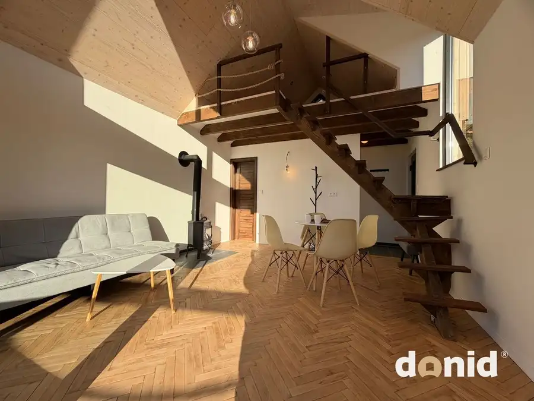
Záhradná chatkaNové 72 900 €NA PREDAJ | novostavba záhradnej chatky | Dolný Kubín - BANISKO Dolný Kubín 25 m²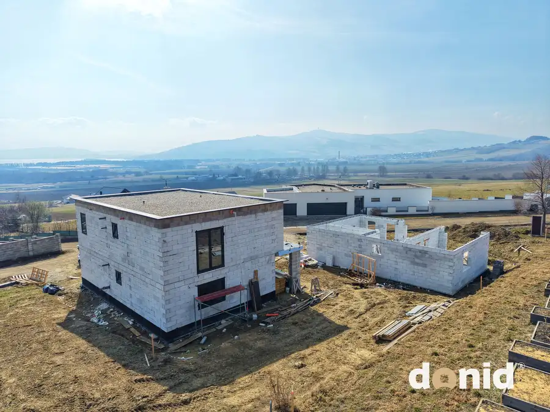
BytNové 168 400 €NA PREDAJ | posledný 3 izbový byt v projekte TRIA KLIN | Klin - Námestovo Námestovo 3-izbový112 m²1. podlažie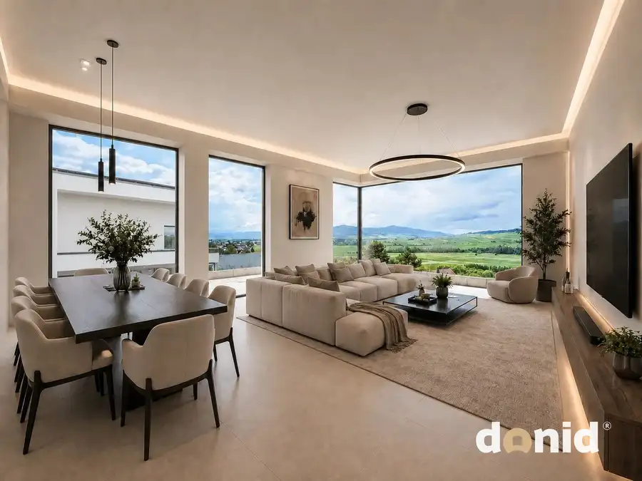
BytNové 223 300 €LETNÁ AKCIA | moderná novostavba 3,5 - izbový byt | Zubrohlava Námestovo 4-izbový86.42 m²2. podlažie